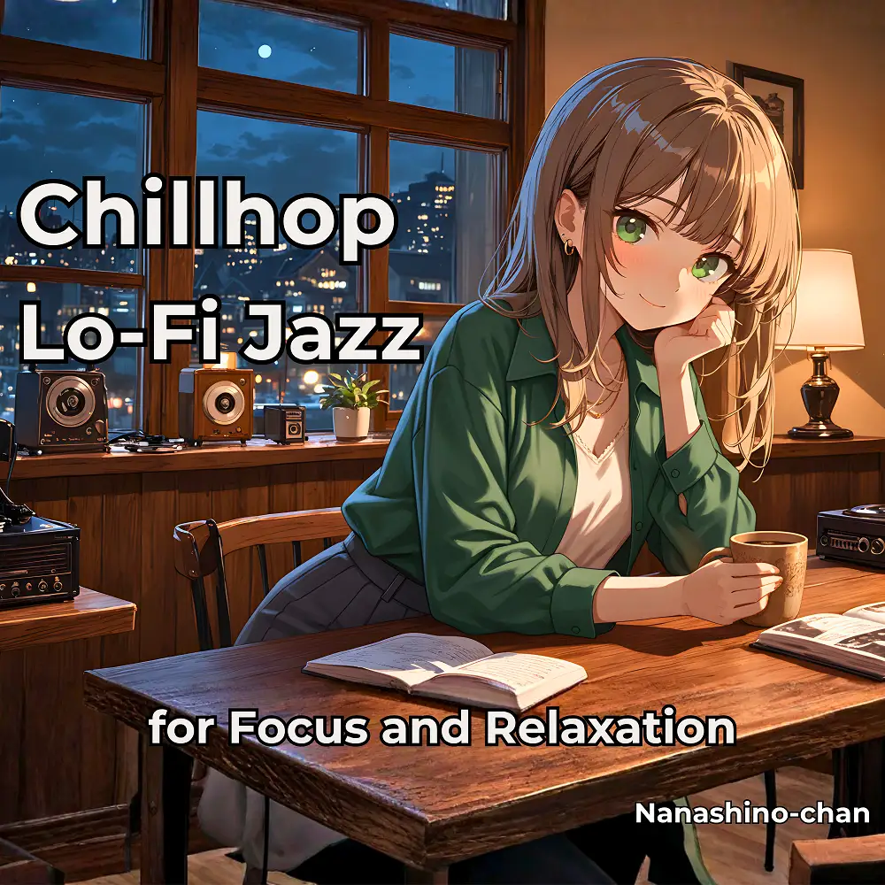

Lo-Fi · Chillhop · Jazz
Chillhop Lo-Fi Jazz for Focus and Relaxation
Nanashino-chan
Explore Chillhop Lo-Fi Jazz for Focus and Relaxation by Nanashino-chan: 24 instrumental tracks spanning Lo-Fi / Chillhop / Jazz. Start with Loops of Thought / Gentle Notebook Sketches, preview the collection and find your favorites on streaming services.
2026-03-13 · Released · 24 tracks · Instrumental
Preview the album
The jacket stays here until you choose a track. Playback uses YouTube.
YOUTUBE PREVIEW
Choose a track to listen
The jacket stays here until you choose a track. Playback uses YouTube.
If playback is unavailable, open the album or track on the streaming service.
Find this album on streaming services
Links marked “search” open search results. Select the album or track on the service.
Track list 24
- 01Loops of Thought
- 02Gentle Notebook Sketches
- 03Jazz in the Window
- 04Rainy Side Street
- 05Cinnamon Breeze
- 06Echoes of a Quiet Room
- 07Lazy Melody Lane
- 08Vinyl Sunset
- 09Flickering Desk Lamp
- 10Chill Notes & Tea
- 11Doodles in Time
- 12Soft Grooves for Solitude
- 13Warm Tones & Chill Vibes
- 14Drifting Over Pages
- 15Lo-Fi Lanterns
- 16Jazz on Repeat
- 17Cozy Momentum
- 18Mellow Scribbles
- 19Lo-Fi Reflection
- 20Twilight Journaling
- 21Still Grooving
- 22Calm Keeps Going
- 23Afterglow Focus
- 24Thank You for Listening
Find a sound for your next post
Copy “Nanashino-chan + track title” and paste it into your social app’s music search. Availability depends on your region and account. Copying the name does not grant usage rights.